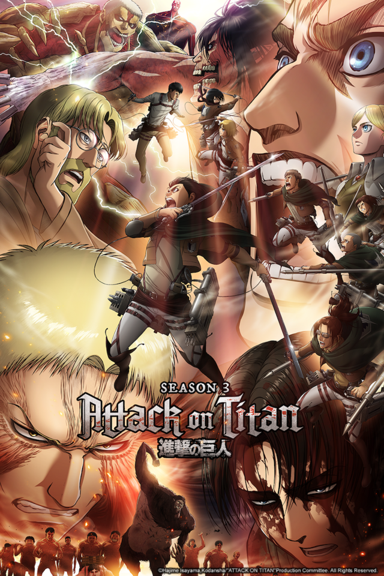

Lidstvo stále ohrožené "Titany", kteří je okrádají o svobodu, zůstává uvězněno uvnitř dvou zbývajících zdí. Snahy o vymýcení těchto monster pokračují; hrozby však nevyvstávají pouze od Titánů za zdmi, ale také od lidí uvnitř nich.
Poté, co byl zachráněn před kolosálními a obrněnými titány, Eren Yaeger se věnuje vylepšování své titánské formy. Krista Lenz se snaží smířit se ztrátou své kamarádky, kapitán Levi si vybere Erena a jeho přátele, aby vytvořili svůj nový osobní oddíl, a velitel Erwin Smith se zotavuje ze svých zranění. Vše se zdá být pro vojáky v pořádku, dokud vláda náhle nepožaduje opatrovnictví Erena a Kristy. Nedávné úspěchy průzkumného sboru přitáhly pozornost a známá tvář z Leviho minulosti je vyslána, aby shromáždila hledané vojáky. Levi a jeho nový oddíl, o který usiluje vláda, musí uniknout svým protivníkům v naději, že udrží Erena a Kristu v bezpečí.
Ve 3. sezóně Shingeki no Kyojin Eren a jeho spolubojovníci nebojují jen o přežití proti děsivým Titánům, ale také proti teroru mnohem lstivějšího nepřítele: lidí.
